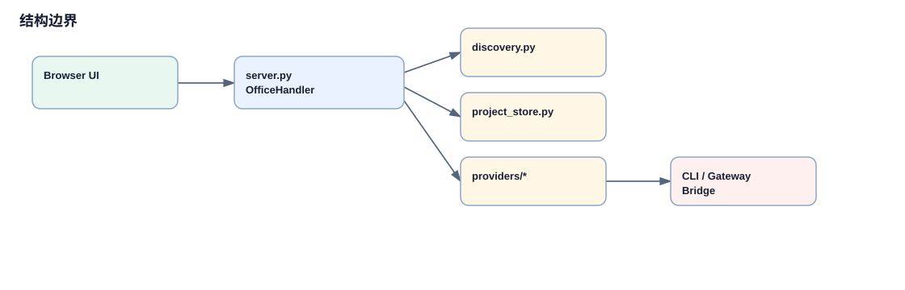

项目全景与模块边界
读这个项目时，先不要从像素画布开始。当前仓库的真实边界是：`start.sh` 本地启动、`app/server.py` 单体后端、`app/*.js` 静态前端、`app/providers/*` provider adapter、`app/project_store.py` 本地项目存储、`kasm-browser-config/` 浏览器代理、`tests/` 回归保障。
目录地图

结构图把仓库分成运行时、状态、外部 provider、浏览器代理和质量保障几类边界。
模块边界和依赖方向
依赖方向应理解为浏览器静态 JS 调用 Python API，Python API 再调用 store、presence、discovery 和 provider adapter。前端不会直接调用 Hermes/Codex/OpenClaw；provider 也不会直接驱动前端。
`app/server.py` 不宜描述成清晰分层框架。它更像持续吸收功能的单体控制台：配置、presence、聊天、项目、会议、归档、定时任务、provider bridge 都在同一文件里，但若干关键边界已经被抽出到 `project_store.py`、`discovery.py`、`gateway_presence.py` 和 `providers/`。
本地状态边界集中在 `VO_STATUS_DIR`。项目 Markdown、presence snapshot、meeting request、provider history、project cron binding 都围绕这个目录持久化，所以“本地优先”不是口号，而是文件系统设计。
结构穿透链路
`start.sh:start_local`
读取 `.env`，准备 `.venv` 和 `VO_STATUS_DIR`，导出 `VO_PORT`、`VO_WS_PORT`、gateway/browser/metrics 变量。
`app/server.py` 模块初始化
加载配置，初始化 `MarkdownProjectStore(STATUS_DIR)`，导入 discovery、provider、presence 和 execution 辅助模块。
`__main__` 后台线程
启动 API usage collector、WebSocket proxy、workflow auto-resume 等后台能力。
`start_http_server`
用 `get_roster()` 初始化 presence，加载 snapshot，再让 `ThreadingHTTPServer` 分发 `OfficeHandler` 请求。
`OfficeHandler`
按路径分发静态文件、`/status`、`/api/projects/*`、`/api/meetings/*`、provider chat/test/history 等接口。
静态前端回调
`index.html` 加载的 JS 通过 fetch、EventSource、WebSocket 信息接口更新画布、聊天、项目看板和会议面板。
证据清单
| 结论 | 证据 |
|---|---|
| 推荐本地启动 | `README.md` 快速启动；`start.sh:start_local` 运行 `app/server.py`。 |
| 单体后端汇聚层 | `app/server.py:OfficeHandler`、`do_GET`、`do_POST`、`start_http_server`。 |
| 静态前端 | `app/index.html` script tags；`app/projects.js`、`app/chat.js` 直接 fetch API。 |
| provider adapter | `app/discovery.py:discover_all_agents`、`app/providers/codex.py`、`app/providers/hermes.py`。 |
关键概念补充
1. Provider Adapter
出现位置：`app/providers/codex.py`、`app/providers/hermes.py`、`app/discovery.py`。它把不同 Agent 平台的发现、状态、聊天和会话能力包装成统一 roster/API 形态。
2. VO_STATUS_DIR
出现位置：`README.md`、`start.sh`、`app/project_store.py`。它是 Virtual Office 的本地状态根目录。